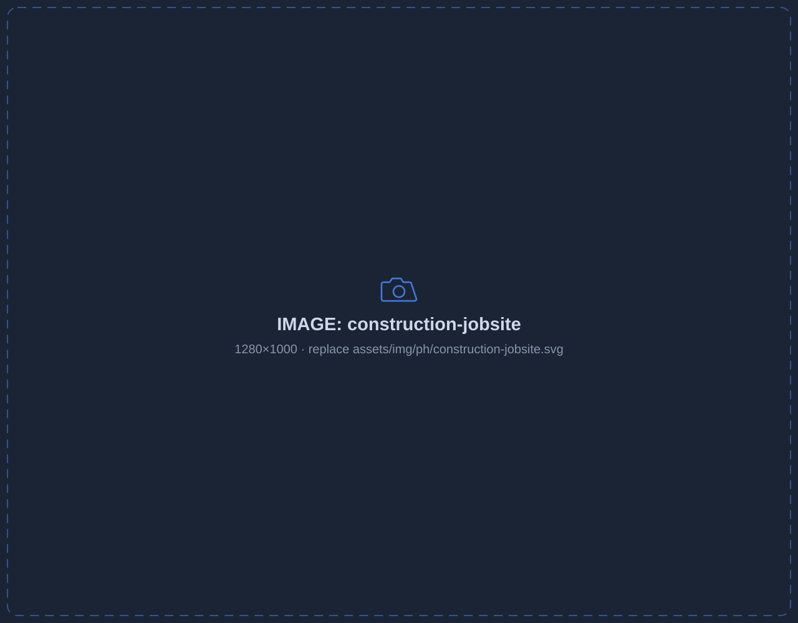

Copper, tool & equipment theft
Wire, tools, fuel and equipment are the most-stolen items on any site — and the easiest to resell.
Copper, tools and equipment walk off open sites every night. Beacon Secure puts an intelligent, solar-powered tower on your perimeter — live in 24 hours, redeployed as the job moves.
Theft, trespass and liability cluster in the after-hours and between-phase gaps. Motion alarms and a padlock don't cut it.

Wire, tools, fuel and equipment are the most-stolen items on any site — and the easiest to resell.
After-hours trespassers create injury liability, vandalism and OSHA exposure you own.
Sites sit wide open nights, weekends and between phases, exactly when theft happens.
Owners and lenders want proof of progress — and disputes need a documented record.
AI towers flag intrusion, missing PPE and after-hours activity the moment it starts.
Verified response with live talk-down and dispatch — and fast redeploy as the site moves.
Time-lapse and incident footage for owners, lenders and dispute resolution.
AI flags missing PPE and unsafe entries — a safety record that supports OSHA compliance.
Automatic time-lapse documents progress for owner and lender updates.
Know who's on site and when — verify subs, deliveries and after-hours access.
Time-stamped footage settles delivery, damage and progress disputes fast.
Perimeter PTZ protects staging and laydown areas, not just the gate.
Move towers as the site evolves from excavation to vertical to finishes.
Carry it in general conditions, scope it in preconstruction, and scale coverage by phase.
We speak GC. Put Beacon Secure on every project with a simple partner path, and get a site-security number for your next bid.
Monitored, talking towers move theft to easier targets — and the footage pays for itself the first time a delivery or damage claim is in question.
Towers are live within 24 hours of placement — solar-powered, so no temporary power or trenching is needed.
Yes. Many GCs carry it in general conditions. We'll give you a per-month number to drop into your next bid.
Footage and documentation workflows can complement Procore and Autodesk Construction Cloud where applicable.
Towers relocate as the site changes, so coverage follows the work through every phase.
Tell us about the project and we'll scope coverage and a monthly number — usually same day.